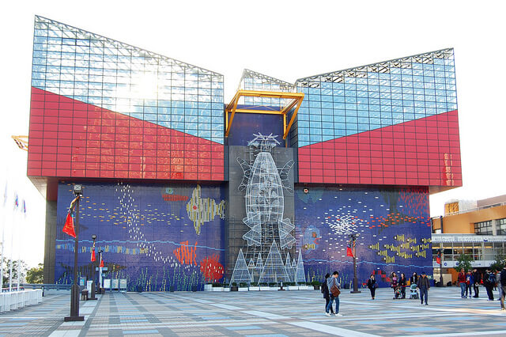

電玩酒吧太空站 (大阪)
淺草寺 (東京)
道頓堀 (大阪)

大阪海遊館是亞洲地區的最佳水族館，更在 TripAdvisor 網站中，已經連續 13 年被票選為最佳水族館。館區以「環太平洋火山帶」和「環太平洋生命帶」為展覽主題；還提供許多互動設施以及超越世界級的展示內容。
TripAdvisor 評價：
"如果您有計劃來大阪遊覽，請您一定要來看看海遊館。距離市中心僅有幾站而已。這個水族館超大，而且有好多不同種類的水生動物。來這裡很有趣同時又可以輕鬆地觀賞，非常適合各年齡層來。在這裡我們依照自己的步調，一區一區地遊覽，可以很輕鬆自在完全沒有壓力。我們非常享受這樣的遊覽方式，而且還可以看到不同的日本景觀。主要的水族展示區位於水族館的中間樓層，有好幾層喔！非常容易找到！" - 來自加拿大的 Trisha_Andrea